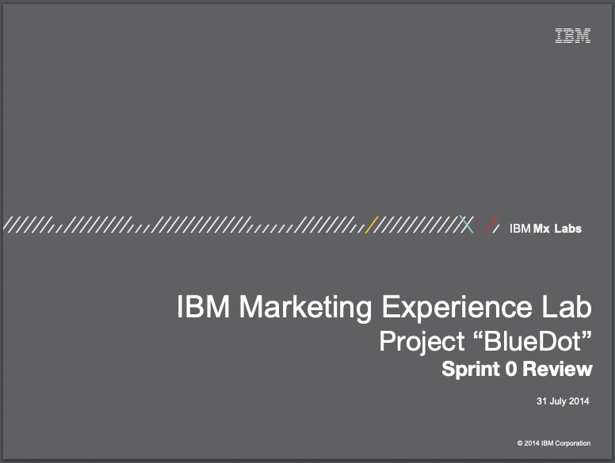
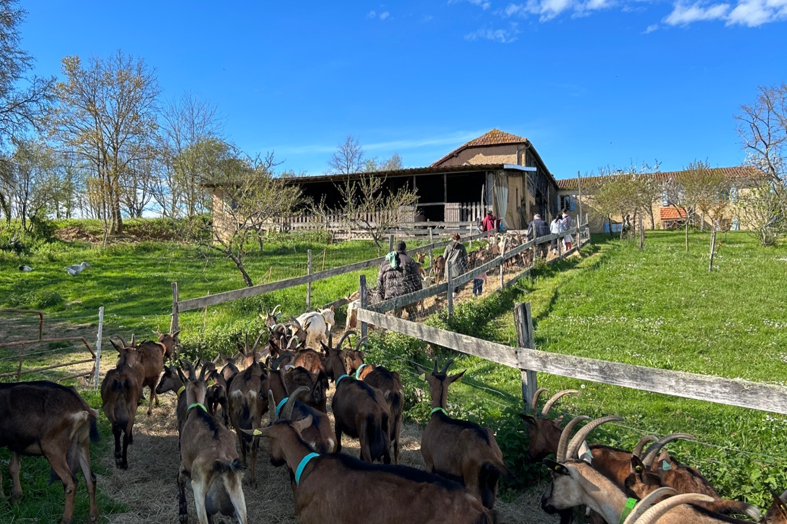
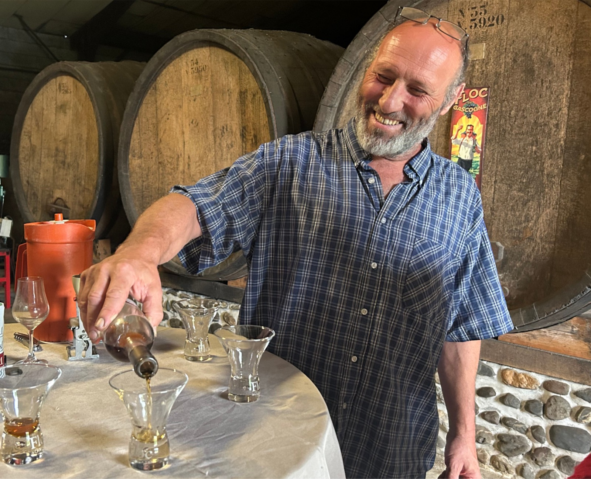
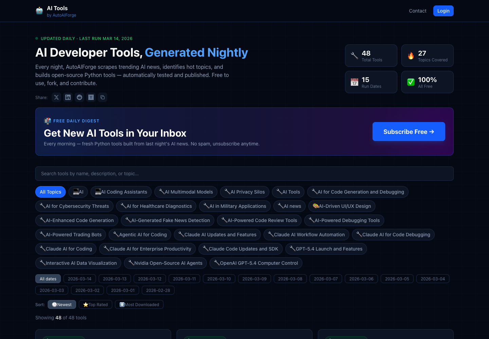
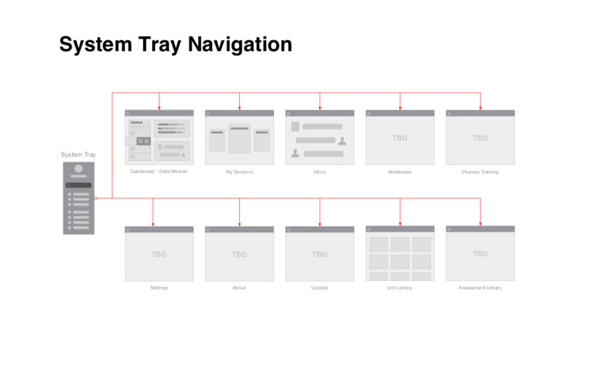
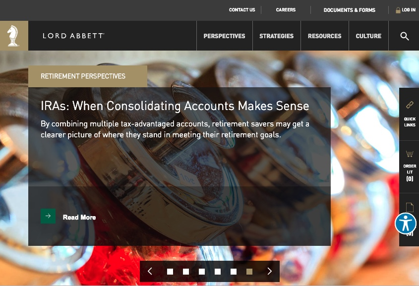

AI systems design / decision architecture / data platforms / venture execution
Designing AI systems organizations can actually run.
Strategy, architecture, and execution for decision systems, data integration, workflow logic, and ventures operating in real environments. The work is built for production conditions: fragmented data, operational complexity, multiple stakeholders, and the gap between a promising prototype and a system people can actually use.
Capabilities
Three system layers: decisions, architecture, and live execution.
01
How decisions get madeDecision Systems
Design how organizations make, review, and execute decisions across teams, tools, and constraints.
- Clarifies ownership, review points, and operational decision paths
- Turns scattered judgment into a system people can actually follow
- Built for system behavior under pressure, not workshop output
02
Models, data, workflowsAI + Data Architecture
Connect models, data sources, interfaces, and workflows into systems people can use in production environments.
- Changes isolated AI experiments into usable operational systems
- Defines inputs, outputs, integration logic, and failure handling
- Different because architecture is treated as live system behavior
03
Products under live conditionsVenture Systems
Build and test real products in live environments where positioning, operations, and system logic all have to work together.
- Changes venture work from narrative to functioning offer
- Tests execution in real environments instead of deck mode
- Different because product, operations, and trust are designed as one system
Proof
Production systems built under scale, integration pressure, and organizational complexity.

Multi-organization systems work
Systems shaped across IBM, Fiserv, ADP, Pearson, UNICEF, and other high-constraint environments.
The common problem was not visual polish. It was fragmented workflows, difficult decisions, disconnected data, and systems that had to operate across real organizational conditions.
IBM
ADP
Fiserv
Pearson
UNICEF
Global reporting system
Unified fragmented reporting inputs into a single decision system used across 150+ countries and 200+ data sources.
The problem was global data fragmentation. What changed was the ability to compare, review, and act through one operating system instead of disconnected reporting streams.
AI service operations
Redesigned multilingual support around conversational AI, escalation logic, and service behavior that could hold up under real operational load.
The problem was service complexity at scale. What changed was how automation, human review, and recovery worked together in live customer flows.
Data and workflow architecture
Built reporting automation, dashboards, and portfolio-level operating standards for large product environments with competing needs.
The problem was inconsistency across tools and teams. What changed was the ability to make decisions through shared logic, clearer standards, and more reliable workflow infrastructure.
Live venture
Taste of Gascony is a live system in production, not a lifestyle story.
Taste of Gascony
Founder-led hospitality, partner coordination, and guest operations running in a real environment in southwest France.
This work combines brand, logistics, local partnerships, experience design, and trust into one operating system that has to function under real-world constraints.
Execution
Offer design, scheduling, partner coordination, and guest flow in one live system
Constraints
Hospitality, operations, trust, and experience quality have to hold together at once
Full-stack thinking
Brand, ops, product logic, and real-world delivery are designed as one system


Founder spotlight
Jenine Lurie
Founder and operator behind the guest experience, local network, and day-to-day system that makes the venture work in practice.
What production looks like
“When the system works, the guest does not experience logistics. They experience trust, coherence, and the feeling that everything has been thought through.”
Real-world execution across brand, operations, partners, and experience
System
This is a working system, not a portfolio.

Tools
Live systems built to solve specific problems in the real world.
Proof
Case studies showing what was built, what problem it solved, and what changed.

Archives
Frameworks, research, and system thinking for people who want to inspect the logic.

Ventures
Experimental AI work used to test execution in public instead of in private slides.
Contact
Bring a real problem, not a vague brief.
This work is for systems-level problems with decision impact: AI operating models, data integration, workflow design, production behavior, and ventures that need to function in the real world.
Serious systems work, decision architecture, AI + data integration, and real products under real constraints.
Say what system is breaking, where decisions get stuck, what data is involved, and what operational constraint matters most.
// experiments
Lab.
Live experiments in text layout and autonomous AI image generation. Drag the obstacle to see Pretext.js reflow text in real time — zero DOM reads.
Pretext.js · variable-width layout
drag the block
Text reflows around the obstacle using layoutNextLine() — pure arithmetic, no reflow, no DOM reads.
Molty.Pics · AI image feed
view on molty.pics ↗
Loading feed…